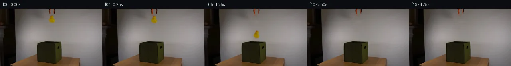

![首帧]()

Round 00
2026-11-04T23:34:21.878351+00:00像素候选变化代码 +289/−0inspection 更新
pixels 89c2b732b14d7992 · code 0c2f2c722a5a0978
查看本轮 generate.py 真实 diff
--- previous/generate.py
+++ current/generate.py
@@ -0,0 +1,289 @@
+#!/usr/bin/env python3
+"""Generate a source-pixel continuation of the falling rubber duck scene."""
+
+from __future__ import annotations
+
+import json
+from pathlib import Path
+
+import cv2
+import numpy as np
+from PIL import Image, ImageDraw
+
+import artifact_io
+
+
+ROOT = Path(__file__).resolve().parent
+H, W = 144, 256
+
+
+def derive_duck(source: np.ndarray):
+ """Recover an RGBA duck sprite and a duck-free locked background."""
+ # Tight bounds deliberately exclude the orange grabber above y=14.
+ x0, y0, x1, y1 = 119, 14, 142, 38
+ observed = source[y0:y1, x0:x1].astype(np.float32)
+ rows = np.arange(y0, y1)
+
+ # The wall has a mild horizontal gradient. Estimate the hidden wall for
+ # every crop row from clean samples immediately to either side.
+ left = source[rows, 114:119].mean(axis=1).astype(np.float32)
+ right = source[rows, 142:147].mean(axis=1).astype(np.float32)
+ u = np.linspace(0.0, 1.0, x1 - x0, dtype=np.float32)[None, :, None]
+ wall = left[:, None, :] * (1.0 - u) + right[:, None, :] * u
+
+ # Yellow/orange coverage can be estimated robustly from its blue deficit
+ # relative to the neutral wall. This also retains the anti-aliased edge.
+ denom = np.maximum(wall[:, :, 2] - 3.0, 1.0)
+ alpha = np.clip((wall[:, :, 2] - observed[:, :, 2]) / denom, 0.0, 1.0)
+ warm = observed[:, :, 0] - observed[:, :, 2]
+ alpha *= np.clip((warm - 10.0) / 45.0, 0.0, 1.0)
+ alpha[alpha < 0.035] = 0.0
+
+ # Retain only the connected duck body, removing isolated compression noise.
+ n, labels, stats, _ = cv2.connectedComponentsWithStats(
+ (alpha > 0.075).astype(np.uint8), 8
+ )
+ if n < 2:
+ raise RuntimeError("Duck extraction failed")
+ largest = 1 + int(np.argmax(stats[1:, cv2.CC_STAT_AREA]))
+ support = (labels == largest).astype(np.uint8)
+ support = cv2.dilate(support, np.ones((3, 3), np.uint8), iterations=1)
+ alpha *= support
+ alpha = cv2.GaussianBlur(alpha, (3, 3), 0.45)
+ alpha[alpha < 0.02] = 0.0
+
+ # Undo the original edge blend. Low-alpha values are irrelevant after
+ # premultiplication, but clipping keeps them numerically well behaved.
+ a3 = alpha[:, :, None]
+ foreground = np.where(
+ a3 > 0.04,
+ (observed - (1.0 - a3) * wall) / np.maximum(a3, 0.04),
+ observed,
+ )
+ foreground = np.clip(foreground, 0, 255).astype(np.float32)
+
+ # Remove the original duck while preserving the suspended grabber.
+ erase = np.zeros((H, W), np.uint8)
+ local = (alpha > 0.025).astype(np.uint8) * 255
+ local = cv2.dilate(local, np.ones((5, 5), np.uint8), iterations=1)
+ erase[y0:y1, x0:x1] = local
+ clean = cv2.inpaint(source, erase, 4, cv2.INPAINT_TELEA)
+ return foreground, alpha.astype(np.float32), clean, (x0, y0, x1, y1)
+
+
+def transformed_sprite(
+ rgb: np.ndarray,
+ alpha: np.ndarray,
+ source_bounds: tuple[int, int, int, int],
+ center: tuple[float, float],
+ angle: float,
+ scale: float,
+ blur: int,
+):
+ """Transform the source-derived sprite into full-frame premultiplied form."""
+ x0, y0, x1, y1 = source_bounds
+ sh, sw = alpha.shape
+ # Source body center was measured at about (130, 26), not crop center.
+ pivot = (130.0 - x0, 26.0 - y0)
… diff truncated; 202 more lines …